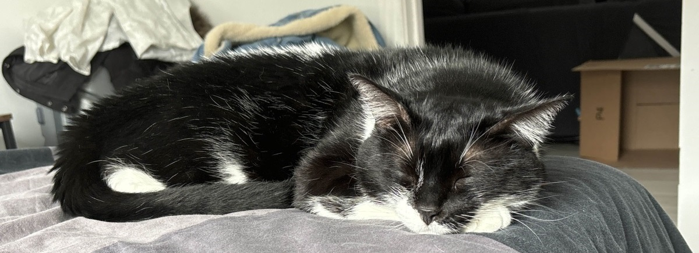

About
I am a programmer who is eager to overcome new challenges on a daily basis.
I love working on side projects and I'm thrilled about engine, tools and gameplay
programming.
As a part of my routine I love to work on a side project that I hope to release
someday.
In the meanwhile, I love to hit the gym and to do some calisthenics from time to time.
Apart from that, I'm learning hip hop and I am a volunteer in a choir.
I also love video games, animals and musics.
Introducing Titou, my assitant.
His main tasks are purring, sleeping and eating all day long.
